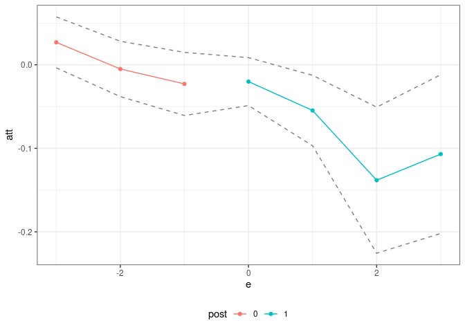
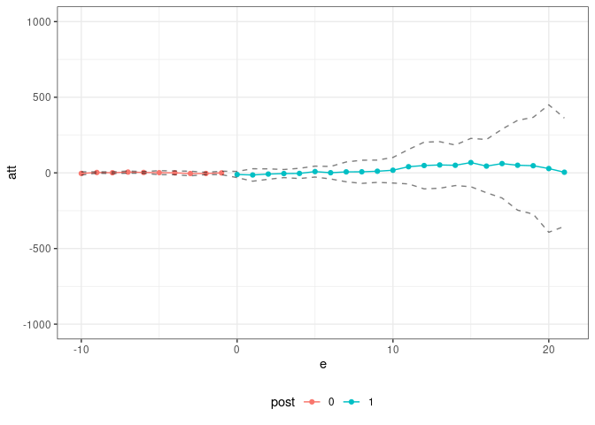
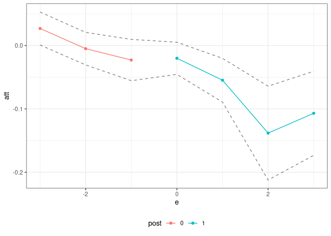

The pte package compartmentalizes the steps needed to implement estimators of group-time average treatment effects (and their aggregations) in order to make it easier to apply the same sorts of arguments outside of their “birthplace” in the literature on difference-in-differences.
This code is lightweight, only works for balanced panels, and has minimal error checking. That said, it should be useful projects that build on top of group-time average treatment effects in order to deliver estimates of causal effects in panel data settings.
The main function is called pte. The most important paramters that it takes in are subset_fun and attgt_fun. These are functions that the user should pass to pte.
subset_fun takes in the overall data, a group, a time period, and possibly other arguments and returns a data.frame containing the relevant subset of the data, an outcome, and whether or not a unit should be considered to be in the treated or comparison group for that group/time. There is one example of a relevant subset function provided in the package: the two_by_two_subset function. This function takes an original dataset, subsets it into pre- and post-treatment periods and denotes treated and untreated units. This particular subset is perhaps the most common/important one for thinking about treatment effects with panel data.
The other main function is attgt_fun. This function should be able to take in the correct subset of data, possibly along with other arguments to the function, and report an ATT for that subset. With minor modification, this function should be availble for most any sort of treatment effects application — for example, if you can solve the baseline 2x2 case in difference in differences, you should use that function here, and the pte package will take care of dealing with the variation in treatment timing.
If attgt_fun returns an influence function, then the pte package will also conduct inference using the multiplier bootstrap (which is fast) and produce uniform confidence bands (which adjust for multiple testing).
The default output of pte is an overall treatment effect on the treated (i.e., across all groups that participate in the treatment in any time period) and dynamic effects (i.e., event studies). More aggregations are possible, but these seem to be the leading cases; aggregations of group-time average treatment effects are discussed at length in Callaway and Sant’Anna (2021).
Here are a few examples:
The did package, which is based on Callaway and Sant’Anna (2021), includes estimates of group-time average treatment effects, ATT(g,t), based on a difference in differences identification strategy. The following example demonstrates that it is easy to compute group-time average treatment effects using difference in differences using the pte package. [Note: This is definitely not the recommended way of doing this as there is very little error handling, etc. here, but it is rather a proof of concept. You should use the did package for this case.]
This example reproduces DID estimates of the effect of the minimum wage on employment using data from the did package.
library(did)
data(mpdta)
did_res <- pte(yname="lemp",
gname="first.treat",
tname="year",
idname="countyreal",
data=mpdta,
setup_pte_fun=setup_pte,
subset_fun=two_by_two_subset,
attgt_fun=did_attgt,
xformla=~lpop)
summary(did_res)
#>
#> Overall ATT:
#> ATT Std. Error [ 95% Conf. Int.]
#> -0.0323 0.0111 -0.0541 -0.0104 *
#>
#>
#> Dynamic Effects:
#> Event Time Estimate Std. Error [95% Conf. Band]
#> -3 0.0269 0.0121 -0.0036 0.0574
#> -2 -0.0050 0.0131 -0.0381 0.0282
#> -1 -0.0229 0.0150 -0.0607 0.0149
#> 0 -0.0201 0.0114 -0.0488 0.0086
#> 1 -0.0547 0.0167 -0.0969 -0.0126 *
#> 2 -0.1382 0.0346 -0.2256 -0.0507 *
#> 3 -0.1069 0.0376 -0.2019 -0.0119 *
#> ---
#> Signif. codes: `*' confidence band does not cover 0
ggpte(did_res)
What’s most interesting here, is that the only “new” code that needs to be writte is in the did_attgt function. You will see that this is a very small amount of code.
As a next example, consider trying to estimate effects of Covid-19 related policies during a pandemic. The estimates below are for the effects of state-leve shelter-in-place orders during the early part of the pandemic.
Callaway and Li (2021) argue that a particular unconfoundedness-type strategy is more appropriate in this context than DID-type strategies due to the spread of Covid-19 cases being highly nonlinear. However, they still deal with the challenge of variation in treatment timing. Therefore, it is still useful to think about group-time average treatment effects, but the DID strategy should be replaced with their particular unconfoundedness type assumption.
The pte package is particularly useful here.
# formula for covariates
xformla <- ~ current + I(current^2) + region + totalTestResults
covid_res <- pte(yname="positive",
gname="group",
tname="time.period",
idname="state_id",
data=covid_data2,
setup_pte_fun=setup_pte_basic,
subset_fun=two_by_two_subset,
attgt_fun=covid_attgt,
xformla=xformla,
max_e=21,
min_e=-10)
#> Warning in compute.aggte(MP = MP, type = type, balance_e = balance_e, min_e =
#> min_e, : Simultaneous conf. band is somehow smaller than pointwise one using
#> normal approximation. Since this is unusual, we are reporting pointwise
#> confidence intervals
summary(covid_res)
#>
#> Overall ATT:
#> ATT Std. Error [ 95% Conf. Int.]
#> 14.8882 83.8907 -149.5347 179.311
#>
#>
#> Dynamic Effects:
#> Event Time Estimate Std. Error [95% Conf. Band]
#> -10 -3.7266 3.8545 -14.3422 6.8889
#> -9 2.6607 1.6804 -1.9672 7.2886
#> -8 0.8290 2.1834 -5.1843 6.8422
#> -7 5.2843 2.5252 -1.6703 12.2390
#> -6 2.8555 2.0553 -2.8050 8.5160
#> -5 1.3589 4.8250 -11.9293 14.6471
#> -4 0.3294 4.4997 -12.0631 12.7219
#> -3 -4.2227 5.5764 -19.5802 11.1349
#> -2 -3.8447 2.6764 -11.2157 3.5263
#> -1 -0.2234 4.1228 -11.5778 11.1310
#> 0 -10.8156 7.4650 -31.3747 9.7434
#> 1 -13.7998 14.9400 -54.9455 27.3458
#> 2 -7.8432 12.4921 -42.2471 26.5608
#> 3 -4.5541 9.7413 -31.3821 22.2738
#> 4 -3.5368 12.2911 -37.3872 30.3136
#> 5 8.5221 13.1051 -27.5701 44.6143
#> 6 1.1140 15.0092 -40.2220 42.4500
#> 7 6.6384 23.7749 -58.8389 72.1158
#> 8 7.1288 27.8035 -69.4435 83.7011
#> 9 10.8758 26.7418 -62.7725 84.5241
#> 10 17.5057 30.7139 -67.0821 102.0935
#> 11 40.8318 41.3370 -73.0124 154.6760
#> 12 48.6134 56.0856 -105.8492 203.0759
#> 13 52.4228 55.8698 -101.4455 206.2911
#> 14 50.2000 48.6461 -83.7737 184.1738
#> 15 68.2960 58.0243 -91.5059 228.0980
#> 16 44.7305 63.8813 -131.2018 220.6629
#> 17 61.4670 82.5996 -166.0166 288.9506
#> 18 50.4635 107.8083 -246.4461 347.3731
#> 19 47.3392 116.1415 -272.5204 367.1987
#> 20 28.6326 152.9542 -392.6110 449.8763
#> 21 4.3445 129.9832 -353.6357 362.3248
#> ---
#> Signif. codes: `*' confidence band does not cover 0
ggpte(covid_res) + ylim(c(-1000,1000))
What’s most interesting is just how little code needs to be written here. The only new code required is the ppe::covid_attgt function which is available here, and, as you can see, this is very simple.
The code above used the multiplier bootstrap. The great thing about the multiplier bootstrap is that it’s fast. But in order to use it, you have to work out the influence function for the estimator of ATT(g,t). Although I pretty much always end up doing this, it can be tedious, and it can be nice to get a working version of the code for a project going before working out the details on the influence function.
The pte package can be used with the empirical bootstrap. There are a few limitations. First, it’s going to be substantially slower. Second, this code just reports pointwise confidence intervals. However, this basically is set up to fit into my typical workflow, and I see this as a way to get preliminary results.
Let’s demonstrate it. To do this, consider the same setup as in Example 1, but where no influence function is returned. Let’s write the code for this:
# did with no influence function
did_attgt_noif <- function(gt_data, xformla, ...) {
# call original function
did_gt <- did_attgt(gt_data, xformla, ...)
# remove influence function
did_gt$inf_func <- NULL
did_gt
}Now, we can show the same sorts of results as above
did_res_noif <- pte(yname="lemp",
gname="first.treat",
tname="year",
idname="countyreal",
data=mpdta,
setup_pte_fun=setup_pte,
subset_fun=two_by_two_subset,
attgt_fun=did_attgt_noif, #this is only diff.
xformla=~lpop)
summary(did_res_noif)
#>
#> Overall ATT:
#> ATT Std. Error [ 95% Conf. Int.]
#> -0.0323 0.0137 -0.059 -0.0055 *
#>
#>
#> Dynamic Effects:
#> Event Time Estimate Std. Error [95% Pointwise Conf. Band]
#> -3 0.0269 0.0133 0.0009 0.0529 *
#> -2 -0.0050 0.0131 -0.0306 0.0207
#> -1 -0.0229 0.0166 -0.0555 0.0097
#> 0 -0.0201 0.0130 -0.0455 0.0052
#> 1 -0.0547 0.0176 -0.0893 -0.0202 *
#> 2 -0.1382 0.0378 -0.2122 -0.0642 *
#> 3 -0.1069 0.0338 -0.1732 -0.0406 *
#> ---
#> Signif. codes: `*' confidence band does not cover 0
ggpte(did_res_noif)
What’s exciting about this is just how little new code needs to be written.